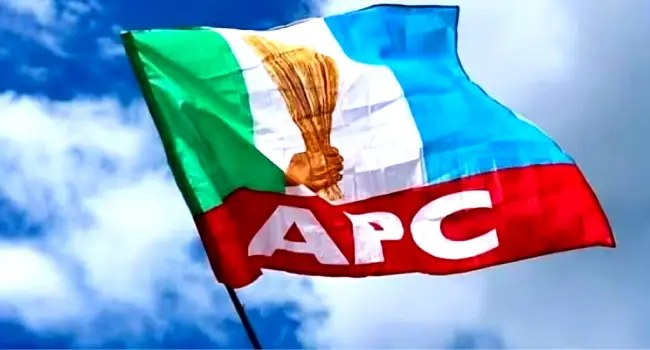

Kaduna-Kano Rail Set For December 3 Inauguration, Kano-Katsina-Maradi Project 70% Complete — APC

The All Progressives Congress Presidential Campaign Council says the Kaduna–Kano Standard Gauge Railway is scheduled for inauguration on December 3, 2026. It reported that the 203-kilometre project is about 90 per cent complete and that the 400-kilometre Kano–Katsina–Maradi railway has reached 70 per cent completion.
In a statement signed by council spokesperson Dele Alake, the APC-PCC said both projects had advanced since President Bola Tinubu took office in 2023. It put the Kano–Katsina–Maradi project at about five per cent complete at that time, and the Kaduna–Kano line at less than 30 per cent.
The council said a Federal Government inspection team, led by Transportation Ministry Permanent Secretary Funso Adebiyi, recently reviewed the projects on the President’s directive. The inspection covered track alignment, drainage, embankment protection, stone pitching and soil stabilisation. Officials also travelled by train from Jaji in Kaduna State to Kano to assess the track and passenger comfort.
According to the statement, the 190-kilometre Jaji–Kano section of the Kaduna–Kano project and a 250-kilometre section of the Kano–Maradi line are to be inaugurated on December 3. The council said the President had directed that outstanding land acquisition and compensation matters in Kaduna metropolis be resolved so work on the rail corridor between Abuja and Kano can be completed.
The Kaduna–Kano line is intended to extend the existing Abuja–Kaduna standard-gauge railway, linking Abuja, Kaduna, Zaria and Kano. The council said it would provide an alternative to road travel and support passenger and commercial movement. It said the Kano–Katsina–Maradi route is expected to strengthen cross-border transport and trade with neighbouring Niger Republic.
Source: Channels TV